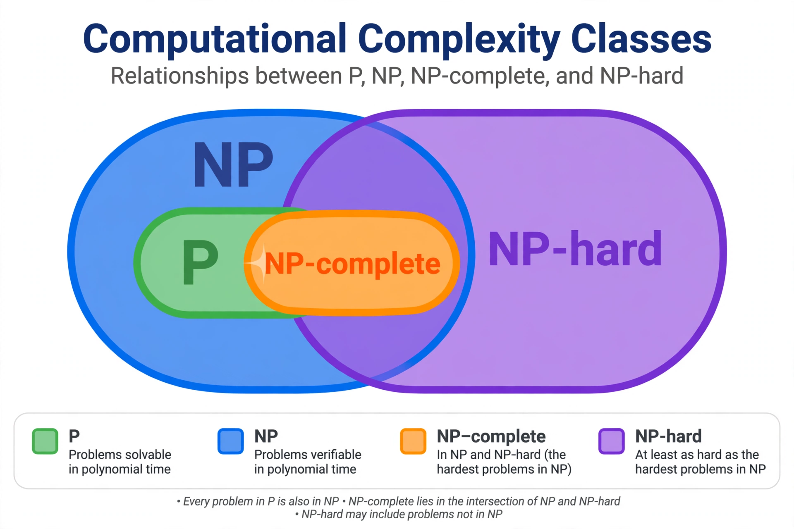

NP-completeness
| Field | Computational complexity theory |
|---|---|
| Key figures | Stephen Cook, Leonid Levin, Richard Karp |
| Related | P versus NP problem, Boolean satisfiability problem |

[Image: Venn-style Euler diagram of complexity classes P, NP, NP-complete and NP-hard under the assumption P != NP]In computational complexity theory, a problem is NP-complete if it belongs to the class NP (its solutions can be verified in polynomial time) and every problem in NP can be reduced to it in polynomial time — that is, it is NP-hard and in NP. NP-complete problems are often addressed by using heuristic algorithms and approximation algorithms.
The concept was introduced by Stephen Cook in his 1971 paper 'The complexity of theorem proving procedures', which proved that the Boolean satisfiability problem (SAT) is NP-complete; Leonid Levin independently developed the theory in the Soviet Union. In 1972 Richard Karp showed that 21 classic combinatorial problems are NP-complete, demonstrating the concept's reach.
If any NP-complete problem could be solved in polynomial time, then every problem in NP could — resolving the P versus NP problem in the affirmative. No such algorithm is known, and NP-completeness is widely taken as strong evidence that a problem is computationally intractable in the worst case.
Definition
A decision problem is NP-complete if (1) it is in NP — given a 'yes' answer, a certificate exists that can be checked in polynomial time — and (2) every problem in NP is polynomial-time reducible to it. Reductions transfer hardness: to prove a new problem NP-complete, it suffices to reduce a known NP-complete problem to it.
Examples
Karp's 21 problems include the travelling salesman problem (decision form), vertex cover, clique, Hamiltonian path and cycle, graph colouring, knapsack and bin packing. Literally thousands of problems across computer science, operations research, biology and physics have since been shown NP-complete, including — famously — generalised versions of games such as Minesweeper, Tetris and certain puzzles.
Dealing with NP-complete problems
In practice, NP-complete problems are attacked with exact exponential algorithms improved by clever pruning, approximation algorithms with provable guarantees (or provable limits), fixed-parameter algorithms exploiting small parameters, randomisation, heuristics and metaheuristics such as simulated annealing, and industrial SAT solvers that perform far better in practice than worst-case theory suggests.
History
Cook's theorem appeared in 1971; Levin's version, with the concept of universal search problems, was published in 1973. Karp's 1972 paper 'Reducibility among combinatorial problems' enormously popularised the idea. The term 'NP-complete' itself, settled after debate in the community (Knuth ran an informal poll), became standard by the mid-1970s.